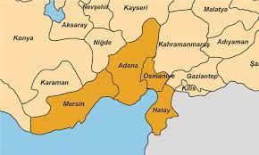

-ÇUKUROVA BÖLGESİ-
Çukurova, tarihi adıyla Cilicia Pedias; Adana, Mersin, Osmaniye ve Hatay illerini içine alan Güney Anadoludaki coğrafi, ekonomik ve kültürel bir bölgedir. 6.3 milyon nüfusuyla, Türkiye'deki en büyük nüfus yoğunluğuna sahip bölgelerinden biridir.
Çukurova batıda Anamur'dan başlamakta olup Akdeniz boyunca doğuya doğru uzanmakta, en kuzeyde Tufanbeyli'ye kadar genişlemekte, İskenderun Körfezi'ni kuşatmakta, güneyde Erzin'e dönmekte ve son olarak da Suriye sınırındaki Yayladağı'nda son bulmaktadır. Çekirdek alanı ise batıda Mersin'i, kuzeyde Kozan'ı, doğuda Osmaniye'yi ve güneyde Akdeniz'i kaplayan Çukurova (Kilikya) düzlüğüdür. Adana-Mersin Metropol Alanı Çukurova'nın iş ve kültür merkezidir.
Çukurova bölgesinin büyük bir bölümü, dünyadaki tarıma en elverişli alanlar arasında olan geniş, düz ve verimli bir alandır. Tarih boyunca Çukurova Avrupa'dan Orta Doğu'ya kaçış noktası olmuştur ve kuzey Orta Doğu ve Orta Asya'dan Akdeniz'e en kısa geçiş noktasıdır, ayrıca iki büyük limanı ve yağ terminaliyle ulaşımın göbeğidir.

Adana ve Çukurova bölgesi eski devirlerden beri bir yerleşim merkezi olmuştur. Tarihi belgelerde Kilikya olarak geçen Çukurova'dan, Boğazköy'den çıkarılan Hitit yazılı levhalarında, Uru Adania (Adana ülkesi) diye söz edilmektedir.
Gezgin coğrafyacı Strabon, antik çağlarda Kilikya olarak bilinen bölgeden, "Coracesion'dan (Alanya), Kilikya-Suriye kapısına kadar uzanan Küçük Asya'nın güneydoğu kıyıları." diye sözeder. Herodot, bölgenin Hypachoea diye adlandırıldığını, Fenikeli Age-nor'un oğullarından Cilix'in buraya gelip yerleştiğini ve onun adından dolayı bölgenin Kilikya adını aldığını nakleder. Fakat Kilikya adı ilk kez, Asur yazıtlarında Chilakka olarak görülmüştür. Bu nedenle bugün Kilikya adının Asur kaynaklarında özellikle Dağlık Kilikya için kullanılan Chilakka kelimesinden kaynaklandığı kabul edilmektedir. Aynı Asur kaynaklarında Ovalık Kilikya ise Yeni Asur İmparatorluğu kralı III. Şalmaneser'in bölgeye sefer yaptığı ve seferlerinin anlatıldığı yazıtlarda "Kue" veya "Que" adıyla geçtiği görülmektedir.
Anadolu ile Suriye ve Mezopotamya arasında ulaşımı sağlayan Gülek ve Sertavul (Kilikya kapıları) ile Belen (Suriye kapısı) gibi önemli geçitler nedeniyle stratejik önem taşıyan bölgenin doğu ve batı kesimleri yeryüzü şekilleri bakımından farklı özellikler gösterir. Bu nedenledir ki Hellenler, batı kesimini Cilicia Tracheia (Dağlık Kilikya), doğu kesimini Cilicia Pedias (Ovalık Kilikya) olarak anmışlardır. Romalılar ise Dağlık Kilikya'ya Cilicia Aspera, Ovalık Kilikya'ya Cilicia Campestris adını vermişlerdir. Dağlık Kilikya kabaca, Alanya ile Mersin arasında kalan, Ovalık Kilikya ise Mersin'den İskenderun Körfezi'ne kadar uzanan kesimlerdir. İki Kilikya'yı ise Lamas (Limonlu) çayının birbirinden ayırdığı kabul edilir. Günümüzde Dağlık Kilikya Taşeli yarımadası, Ovalık Kilikya ise Çukurova olarak adlandırılır.